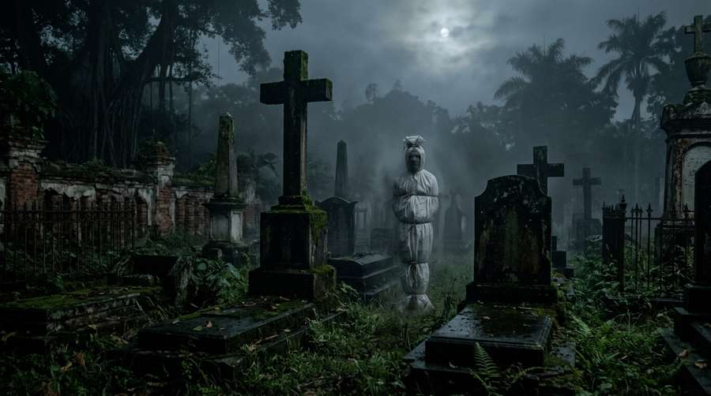

Pendahuluan
Di balik hiruk pikuk Jakarta yang tidak pernah tidur, tersembunyi sebuah kawasan bernama Kampung Tua — sisa-sisa permukiman kolonial Belanda yang kini dikelilingi gedung-gedung pencakar langit modern. Di antara nisan-nisan tua beraksara Latin yang sudah setengah tertutup lumut, terdapat sebuah pemakaman kecil yang tidak tercatat dalam peta wisata resmi manapun. Warga sekitar menyebutnya Makam Tuan Gelap, dan mereka memiliki alasan yang sangat kuat untuk tidak mendekatinya setelah matahari terbenam.
Setiap malam Jumat, dan terkadang pada malam-malam dengan bulan suram, saksi melaporkan penampakan sosok berkain kafan putih berdiri di antara nisan-nisan Belanda. Yang membedakannya dari pocong pada umumnya: ia tidak memiliki wajah. Bagian kepala yang seharusnya menampilkan lubang mata dan mulut hanya datar — putih polos, seperti kain yang direntang tanpa isi. Dan ia selalu menghilang tepat saat adzan subuh pertama berkumandang dari masjid terdekat.
Sejarah Makam yang Terlupakan
Warisan Kolonial yang Gelap
Menurut catatan sejarah lokal yang dikumpulkan oleh Komunitas Sejarah Jakarta, makam ini didirikan sekitar tahun 1850-an untuk menguburkan pegawai perusahaan dagang Belanda yang meninggal di Hindia Belanda. Namun ada satu nisan yang selalu disebutkan dalam cerita rakyat setempat tanpa pernah ditemukan secara fisik oleh peneliti: nisan dengan nama "Hendrik van der Meer, 1863" — seorang apoteker yang tewas dibunuh dalam keadaan misterius dan dikuburkan di luar pagar makam resmi karena dianggap pembunuh.
Menurut legenda, Hendrik tidak dibunuh oleh manusia. Ia ditemukan tewas di kamar apoteknya dengan ekspresi ketakutan yang begitu mengerikan hingga petugas yang mengangkat jenazahnya mengalami mimpi buruk selama berbulan-bulan. Kain kafan yang membungkus tubuhnya dicatat dalam laporan (yang kini hilang dari arsip) memiliki tekstur yang tidak biasa — lebih seperti kain lokal daripada kafan Belanda standar.
Konflik: Penampakan yang Konsisten
Saksi Mata dari Generasi ke Generasi
Pak Junaedi, juru parkir yang bekerja di area Kampung Tua sejak tahun 1982, adalah salah satu saksi paling konsisten. Ia melaporkan telah melihat pocong tanpa wajah sebanyak tujuh kali dalam kariernya — selalu di malam Jumat, selalu di antara pukul satu dan empat dini hari, dan selalu menghilang saat adzan subuh.
"Tidak ada wajah. Saya sudah bilang tidak ada wajah," kata Pak Junaedi dengan nada datar, seolah ia sudah terlalu sering menceritakan ini hingga kehilangan emosi. "Tapi yang paling mengerikan bukan itu. Yang mengerikan adalah dia berdiri menghadap ke arah kota. Selalu ke arah kota. Seperti menunggu sesuatu dari sana."
"Saya fotografi dengan HP, tapi hasilnya hanya kabut putih. Tiga hari kemudian, HP saya mati total. Kebetulan atau tidak, saya tidak mau ambil pusing." — Andi, fotografer amatir, 2017
Malam Investigasi
Pada Oktober 2023, tim dokumenter horor independen melakukan vigilia selama tiga malam Jumat berturut-turut di area makam dengan izin dari tokoh masyarakat setempat. Malam kedua, kamera termal merekam anomali suhu: siluet humanoid dengan suhu lima derajat lebih rendah dari lingkungan, berdiri tegak di koordinat yang konsisten dengan lokasi nisan Hendrik van der Meer menurut peta kuno.
Pukul 04:38 — empat menit sebelum adzan subuh — kamera mengalami gangguan statis. Saat rekaman kembali normal, siluet sudah tidak ada. Yang tersisa di lokasi tersebut adalah embun yang tidak wajar — padat dan dingin, padahal malam itu tidak terlalu lembap.
Teori dan Penjelasan
Perspektif Agama
Ustadz Fauzan, pengurus masjid terdekat yang adzan subuhnya diyakini "menyingkirkan" pocong tersebut, menawarkan penjelasan teologis: "Adzan adalah panggilan kepada yang hidup dan yang telah kembali kepada Allah. Arwah yang terjebak — apapun asal-usulnya — tidak tahan dengan seruan itu. Mereka harus pergi, atau menghadapi konsekuensinya."
Menariknya, pocong ini hanya dilaporkan di area makam Belanda, tidak pernah di pemakaman Islam yang berada dua ratus meter jauhnya. Seolah ada batas teritorial yang dihormati oleh kedua belah pihak.
Perspektif Antropologi
Dr. Lestari, antropolog dari Universitas Indonesia yang meneliti fenomena spiritual urban Jakarta, berpendapat bahwa cerita pocong tanpa wajah di makam Belanda adalah manifestasi kolektif dari trauma sejarah kolonial yang belum terselesaikan. "Wajah yang hilang melambangkan identitas yang dirampas — baik identitas pribadi Hendrik, maupun identitas bangsa yang dijajah," jelasnya.
Teori ini tidak menjelaskan anomali suhu dan rekaman kamera, tetapi memberikan konteks budaya yang mendalam untuk memahami mengapa cerita ini terus hidup di masyarakat urban modern.
Akhir Cerita: Yang Tidak Pernah Pergi
Pada Maret 2025, pemerintah setempat mengumumkan rencana restorasi kawasan Kampung Tua termasuk area makam. Proyek itu ditunda setelah tiga pekerja melaporkan pengalaman serupa dalam seminggu: melihat sosok putih tanpa wajah berdiri di lokasi penggalian, dan alat berat yang mogok tanpa sebab pada dini hari.
Hingga kini, Makam Tuan Gelap tetap berdiri — setengah terlupakan, setengah ditakuti. Pocong tanpa wajah masih dilaporkan muncul setiap malam Jumat. Dan setiap subuh, adzan dari masjid Al-Ikhlas berkumandang seperti biasa — dan sosok itu menghilang, hingga Jumat berikutnya tiba.
Apakah Hendrik van der Meer masih mencari pengakuan atas kematiannya yang tidak adil? Ataukah ia bukan Hendrik sama sekali, melainkan sesuatu yang jauh lebih tua yang menggunakan kain kafan sebagai kamuflase? Kampung Tua menyimpan rahasia yang mungkin tidak akan pernah terungkap sepenuhnya.
Kesimpulan
Urban legend pocong tanpa wajah di makam Belanda adalah salah satu kisah horor urban Jakarta yang paling konsisten dan terdokumentasi. Kombinasi sejarah kolonial, saksi mata dari berbagai generasi, dan bukti teknologi yang terbatas namun mengarahkan ke arah yang sama membuat cerita ini lebih dari sekadar dongeng pengantar tidur.
Jika Anda berkunjung ke Kampung Tua untuk wisata sejarah, nikmati keindahan arsitektur kolonialnya di siang hari. Tapi saat malam tiba dan bulan mulai suram, mungkin lebih bijak menghindari jalan setapak di belakang gereja tua. Karena di sana, ada sesuatu yang berdiri tanpa wajah — menunggu sesuatu yang mungkin tidak akan pernah datang.
Jelajahi Lebih Banyak Urban Legend
Temukan kisah-kisah horor urban dari seluruh Indonesia di Pocong.id.
Baca Urban Legend LainnyaBaca juga: Pocong Penunggu Jembatan Tua dan Rumah Kos Nomor 13.
Artikel Terkait